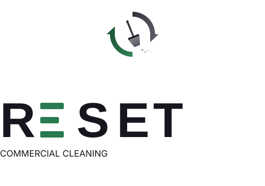

A premium identity system designed for clarity, longevity, and consistent application across digital and physical surfaces.
The RESET wordmark features a unique typographic treatment where the first "E" is rendered as a decorative three-bar signature element, while the second "E" (along with R, S, and T) uses the standard Manrope font family. This creates visual distinction and reinforces the brand's precision and sophistication.
Wordmark structure: R + E(decorative) + S + E(text) + T


| Wordmark |
RESET
Manrope · 600 weight · letter-spacing 0 · the two E positions are replaced with the bar-E signature element.
|
| Tagline |
COMMERCIAL CLEANING
Inter · 400 weight · justified to the full width of RESET above it (textLength = 372 in the master file).
|
| Bar-E construction |
Three sage-green bars · top & bottom 48u wide, middle 38u wide · 13u tall · 16u vertical gap · 2.5u corner radius. Built as <rect> elements, not as a font character.
|
| Primary lockup | reset-logo-horizontal-dark.svg · 760 × 180 |
| Primary lockup (light) | reset-logo-horizontal-light.svg |
| Stacked lockup | reset-logo-stacked-dark.svg · 540 × 380 |
| Stacked lockup (light) | reset-logo-stacked-light.svg |
| Icon dark | reset-icon-dark.svg · 120 × 120 vector, 512 × 512 render |
| Icon light | reset-icon-light.svg |
| Icon (color-neutral) | reset-icon.svg |
| Favicon | reset-favicon.svg · simplified for small sizes |
| Wordmark dark | reset-wordmark-dark.svg · 540 × 180 |
| Wordmark light | reset-wordmark-light.svg |